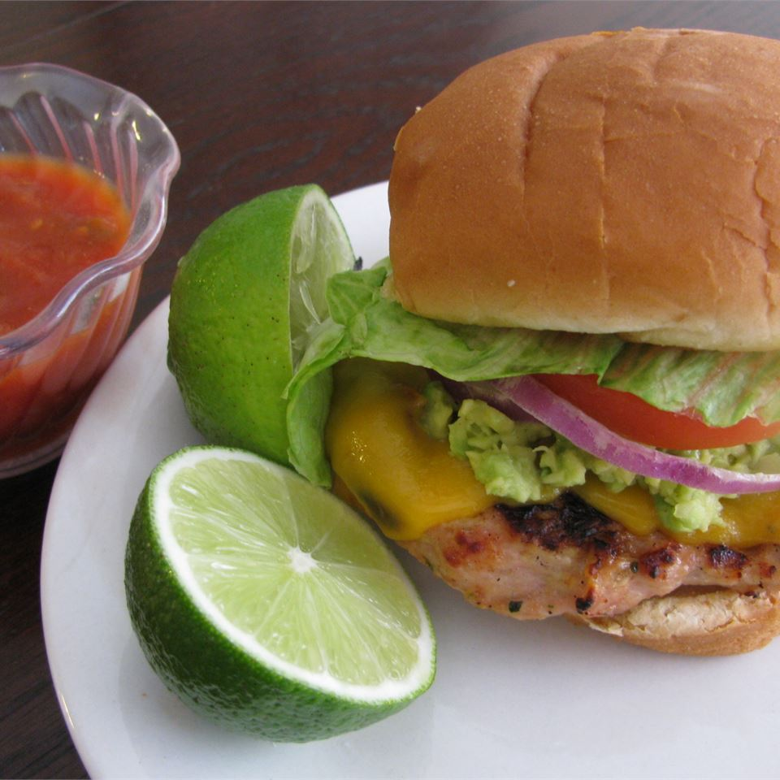

Chicken Burgers

A simple recipe to make fantastic chicken burgers
My friend invented this recipe and it was so fantastic I had to share! The flavor is incredible!
Ingredients
- 1 pound ground chicken
- ½ (1 ounce) package guacamole seasoning mix
- ½ cup chopped fresh cilantro, divided
- ½ lime, juiced
- ¼ cup minced onion
- 8 slices ciabatta bread
- ¼ cup prepared salsa, divided
- 4 slices Cheddar cheese
Steps
- Preheat an outdoor grill for medium heat, and lightly oil the grate.
- In a bowl, mix together the ground chicken, guacamole seasoning, half the cilantro, lime juice, and minced onion until thoroughly combined. Form the chicken mixture into 4 patties. Reserve the other half of the cilantro for garnish.
- Grill the chicken burgers on the preheated grill until the meat is no longer pink inside, the juices run clear, and the burgers show browned grill marks, 5 to 8 minutes per side.
- About 2 minutes before burgers are done, place slices of ciabatta bread onto the grill to toast, about 1 minute per side. About 1 minute before the burgers are done, top each burger with a slice of Cheddar cheese, and let melt.
- Serve chicken burgers on the toasted ciabatta bread, topped with about 1 tablespoon of salsa and about 1 tablespoon of the reserved chopped cilantro.